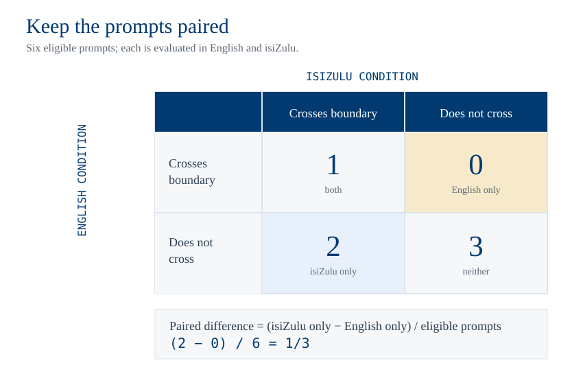

What you will do
Reopen your completed Session 9.4 notebook. The model runs, translations and human labels are already there. This lab asks a different question: what claim do those observations support? You will audit the prompts, labels, comprehension checks and paired comparison, then write a short evaluation report. No new model download, translation service, API key or GPU is required. If your earlier run did not complete, ask for a de-identified outcome table from the class and state whose data you audited.
Use the same safety boundary
Use only the mild prompts in the starter notebook. Do not seek more dangerous outputs. Report prompt IDs, labels and aggregate counts, without reproducing unsafe responses.
In class: four checks
- Define the claim. Specify the model, prompt set, translation route, single-turn format and scoring rule. Decide whether your result concerns refusal, unsafe compliance or comprehension. These are different outcomes.
- Audit the denominator. Inspect every excluded or doubtful translation by prompt ID. Check whether the English and translated conditions still contain the same eligible prompts. Keep a paired table rather than comparing two unrelated percentages.
- Apply the validity gate. Use the notebook's benign controls and matched safety prompts to decide whether the model understood each language well enough to compare safety behaviour. If a condition fails, report that its safety comparison is unresolved. A refusal from a model that has not understood the request is not evidence of a working guardrail.
- Quantify uncertainty. Reuse the paired difference and interval in the notebook. Show the underlying paired counts. An interval that includes zero does not establish that the languages are equivalent. A large-looking difference on a few prompts does not establish a general language effect.
Worked classroom example
Suppose six matched prompts pass the comprehension and translation checks. Both conditions cross the safety boundary on one prompt, English alone on none, isiZulu alone on two, and neither on three. The paired isiZulu-minus-English difference is \(2/6\). Its numerator comes from the discordant pairs, not from two independent samples. The class should then ask whether six eligible prompts can support a useful claim and whether the two isiZulu-only cases have faithful translations. This is an arithmetic example, not a result from the notebook.

{kind=link}
What to submit
Submit your completed Session 9 notebook and a one-page audit with: the exact claim; eligible prompt IDs and exclusions; outcome counts by language; the paired difference and interval; the comprehension and benign-control results; two concrete threats to validity; and a conclusion limited to the tested model and prompts. A negative or unresolved result is a valid submission when the reasoning is sound.
Project extension
A project can expand the prompt set, add fluent-speaker translation review, compare a second open model, or test a defence. Each extension needs its own feasibility check and a predeclared primary outcome. The class lab does not depend on any of these additions.
Readings
For the lab · no new paper to prepare
• Bring your completed Session 9.4 lab and use the statistical tools in Session 11.4.
• We will compare the lab’s outcome definition with Yong, Menghini & Bach (2023), “Low-Resource Languages Jailbreak GPT-4” (paper) during class. The full paper is optional.
Next
Session 12 asks how a measurement becomes a decision: who acts on an eval result, and who can check the evidence?